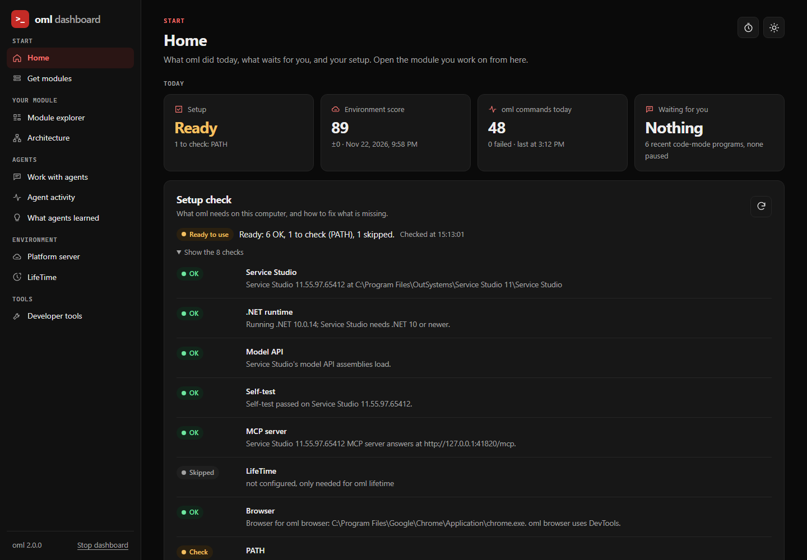

OutSystems 11 · command line · AI agents
oml
OutSystems 11 from the command line. Built for AI agents.
Read, change, check and review modules through Service Studio's own Model API. Every change goes to a staged copy first. Use it yourself, or give its skill to any agent.
- 0.08 s per command, warm
- up to 3× fewer tokens than the MCP
- 11 production rules
Windows · Service Studio 11 · .NET 10 runtime · MIT license
oml create orders --in C:\Exports\Orders.oml
cd orders
oml inspect modules\Orders.oml --own
oml apply modules\Orders.oml specs\change.json staged\Orders.oml
oml review modules\Orders.oml staged\Orders.oml --out review.html
oml install staged\Orders.oml modules\Orders.omlapply never touches the source. install replaces it only when the staged file has no errors, and keeps a backup.
Works with the agent you already use
- Claude Code
- GitHub Copilot
- Cursor
- Gemini CLI
- Windsurf
- Zed
- Jules
- Junie
- opencode
- Warp
- Any MCP client
Why oml
More than the OutSystems MCP
Agents that change OutSystems modules must be cheap, fast and safe. Here is oml next to Service Studio's MCP server and the official O11 skill.
| Topic | OutSystems MCP | oml |
|---|---|---|
| Works on | Modules open in Service Studio (newer builds can open them) | Module files. Many modules, many agents. Service Studio must be installed but can stay closed: only pull, publish and Refresh All need it open. |
| A change | Goes into a working copy. No production rules. | Goes into a staged copy. Rules are enforced, you review it, install keeps a backup. |
| Tokens | A 70 KB skill, then one call per read or C# change | A short skill, compact JSON, and oml code: many calls, one answer. |
| Parallel agents | One edit session per module. A second agent waits. | Each agent has its own file. One command merges them. |
| Checks | TrueChange and Compare-and-Merge | 36 AI Mentor-like rules, a plain-words review, architecture maps. |
| Server versions | The latest only (Studio 11.55.98+) | Pull, compare and check any version, with scores over time. |
| Running app | Not included | Opens screens in a browser and reports what users see, at every width. |
| More | Any Model API change through C# | Reactive migration, LifeTime deploys, project memory, offline docs, test data, mocks, UI skills. |
oml also uses Service Studio's MCP server, for pull, publish, Refresh All and live queries; changes there wait for your yes. Compared as of November 2026. For ODC, use OutSystems' ODC MCP server.
Benchmarks
Same task, same module, same model
The MCP side uses Service Studio's MCP server with the official O11 skill. Most rows are one run: read them as a direction, not a promise.
- 3.0×fewer input tokens and 3.3× faster on a small task
- 42%cheaper on 24 UI components with one agent
- 24 / 24parts built by 8 parallel agents, against 20 / 24 with the MCP
| Task | OutSystems MCP | oml | Difference |
|---|---|---|---|
| Small: entity, 2 CRUD actions, list screen | 611k input tokens, 185 s, 19 tool calls (2 failed) | 207k input tokens, 56 s, 10 tool calls (0 failed) | 3.0× fewer tokens, 3.3× faster |
| Large: 24 UI components, 1 agent | 24/24 built, $0.94, 787 s, 58 turns | 24/24 built, $0.55, 706 s, 37 turns | 42% cheaper |
| Large: 24 UI components, 8 agents + 1 assembly | 20/24 built (one agent blocked, one block lost in a merge), $3.16, 968 s | 24/24 built, 0 errors, 0 warnings, $1.17, 700 s | All parts built, 63% cheaper |
A wizard UI: 11 blocks, a screen and a structure, oml code vs MCP |
82/82 elements, 45 of 47 optional inputs made mandatory, $1.51, 1,073 s | 82/82 elements, all inputs right, $0.76, 752 s | 50% cheaper, 2.1× fewer tokens |
oml's own speed, no model
Starting Service Studio's model takes 2 to 5 seconds. Warm workers keep it loaded in the background, so only the first command pays for it. oml mcp and oml code use the same workers.
| Call | Cold | Warm |
|---|---|---|
One inspect or describe | 1.9 s | 0.07 s |
An oml code program with an oml call | 5 s | 0.33 s |
5 inspects in a row (warm: through oml mcp) | 9.4 s | 13 ms |
Every table, the history and how to run them again: BENCHMARKS.md.
Quick start
Read, change, review, install
Describe a change in a JSON spec. oml writes it to a staged copy, checks it, and installs it only when it is clean.
-
Start a project
Modules, skill and settings in one folder. Run
oml createalone and it asks its questions.PowerShelloml create orders --in C:\Exports\Orders.oml cd orders -
Read the module
Compact JSON, sized for agents.
PowerShelloml inspect modules\Orders.oml --own --only entities,actions,screens -
Write a spec and apply it
A small
specs\change.json, applied to a staged file.specs\change.json{ "entities": [ { "name": "ReviewNote", "attributes": [ { "name": "Text", "length": 250, "mandatory": true } ] } ] }PowerShelloml apply modules\Orders.oml specs\change.json staged\Orders.oml -
Review, then install
What changed, in plain words. Install keeps a backup.
PowerShelloml review modules\Orders.oml staged\Orders.oml --out review.html oml install staged\Orders.oml modules\Orders.oml
No .oml file yet? oml pull saves the module open in Service Studio; oml server pull gets the published one. Rather click than type? oml alone opens a menu, oml dashboard a local web page. A slow command? Add --timings.
What it covers
From reading a module to deploying it
Every command has more options: oml <command> --help, or commands.md.
-
Read a module
What a module holds, what an element does, which module owns it.
inspectdescribefindqueryflowtreeexport -
Change a module
Data, logic, UI and REST from a JSON spec, into a staged file. 20 recipes to copy.
applyvalidateinstallnewspectranslations -
Check and review
36 AI Mentor-like rules in seconds, a plain-words review, a zoomable architecture page.
checkreviewarchitecture -
Platform server
Every module and version on the server, Service Studio closed. A daily environment score.
server modulesserver pullserver checkreview --server -
Service Studio and LifeTime
Save, 1-Click Publish, Refresh All, tags and deploys. Each one asks first.
pullpublishreferencesstudiolifetime -
Migrate to Reactive
A plan and specs for a Traditional Web module, progress by name, and a check of the new module.
migrate planmigrate statusmigrate check -
Running app
What users see, why a widget looks wrong, overflow at each width, CSS previews, logins by role.
browser pagebrowser lookbrowser sweepbrowser trybrowser runbrowser accounts -
Tests, data and mocks
What to test after a change, BDD test screens, DEV test data that cleans up after itself.
test scenariostest bddtest datamap mock -
Whole applications
Map every module once. Then ask who uses an element and what breaks if it changes.
map buildmap usesmap impactmap datamap api -
Agents
Code mode, an MCP server, batches, project memory, offline docs, hooks and 16 UI skills.
codemcpbatchmemorylearnhooksdoc -
For people
Commands that ask what they need, a menu, a local dashboard, change walkthroughs, Explorer entries.
createmenudashboarddashboard --changemenu explorer -
Packages and assets
.oapand.osppackages,.xifextensions, fonts to WOFF2, images, icons and SVG.appextensionfontimage
I want to...
| Job | Command |
|---|---|
| Start working on an application | oml create <project> --in <folder or .oap> |
| See what a module holds | oml inspect M.oml --own |
| Know what an action or screen does | oml describe M.oml <Element> |
| Find which module owns an element | oml find <Name> --in modules |
| Add entities, actions, screens, REST APIs | oml apply M.oml spec.json staged.oml |
| Check a module before install | oml check M.oml |
| See what changed between two versions | oml review before.oml after.oml |
| Compare two published versions on the server | oml review --server <Module> 4 published |
| Get a module without opening Service Studio | oml server pull <Module> --out M.oml |
| Check the whole environment every evening | oml server check |
| Fix a Service Studio error | oml doc warning <id> |
| Move a Traditional Web module to Reactive | oml migrate plan old.oml --name NewModule |
| See a screen the way users see it | oml browser page <url> |
| Find why a widget looks wrong | oml browser look <url> <widget> |
| Click through a screen like a tester, logged in as a role | oml browser run <script.json> |
| See the test accounts by role | oml browser accounts |
| Make a screen look better | oml doc better-ui |
| Know what to test after a change | oml test scenarios before.oml after.oml |
| Publish after review (asks first) | oml publish <Module> |
| Deploy with LifeTime (asks first) | oml lifetime tag, oml lifetime deploy |
| Run many oml calls in one step | oml code run -f program.py |
| Map who calls what across apps | oml map build <project>, then oml map impact <element> |
| See every setting, to copy and change | oml config example |
No task matches. Try one word, such as server
or screen
, or search oml-full.md.
Everything oml does: oml-full.md. Every spec key: spec.md. Not supported: debugging, SOAP and ODC.
Warm workers
Model commands take about 0.08 s instead of 2 to 5. A background oml keeps Service Studio loaded;
oml codeuses it too.Change, don't duplicate
In the staged copy, agents change the existing actions, screens and blocks instead of making copies such as
GetOrders2. Deletes and data risks wait for your yes; entity data is never deleted.Prompts and color
oml createasks for the folder, modules, server and agent. Green is passed, yellow needs a look, red failed.oml config exampleprints every setting.Test accounts by role
One account per role in
.oml/test-accounts.local.json. Browser scripts log in with{"login": "Manager"}, and oml types the password.16 UI skills
Accessibility, layout, typography, color, motion and copy, rewritten for Reactive and Traditional Web. Read one with
oml doc better-ui.Hooks for every agent
oml hooks installguards Claude Code, GitHub Copilot, Codex and Gemini CLI: no.omledits, no big files read whole. A hook never blocks a call because of an oml error.
AI agents
Give the skill to any agent
Put the skill/ folder in your project (oml create does it). Only a short skill loads by default; the rest is read when a task needs it.
The agent loop
- Read the module.
- Copy a recipe into a spec.
applyto a staged file.validate, fix, repeat.
It asks you before anything that touches a real module or environment.
Many calls, one program
With oml code, the agent writes one program instead of many tool calls. Reads and staged writes run at once; install, publish, server and LifeTime calls wait for a person. Needs Python 3.9+.
mods = ["Orders.oml", "Orders_CS.oml", "Customers_CS.oml"]
found = parallel([("oml.read", {"args": ["check", m]}) for m in mods])
[helpers.oml.out(r)["summary"] for r in found]Install per harness
| Harness | Install |
|---|---|
| Codex, Cursor, Windsurf, Zed, VS Code (Copilot), Copilot coding agent, Jules, Aider, Junie, Amp, opencode, Warp | Copy skill/AGENTS.md to AGENTS.md at the project root. |
| GitHub Copilot (also Visual Studio) | Copy skill/AGENTS.md to .github/copilot-instructions.md. |
| Gemini CLI | Copy skill/AGENTS.md to AGENTS.md and set "contextFileName": "AGENTS.md" in .gemini/settings.json. |
| Claude Code | Copy skill/ to %USERPROFILE%\.claude\skills\outsystems-oml\, or put @AGENTS.md in the project's CLAUDE.md. |
| Other agents | Give them skill/AGENTS.md or skill/SKILL.md as instructions. |
Give a good task
Say four things: the module file, what to build or change, which elements of other modules to use (Module.Element), and what the agent may not do. One task per message; split big features into data, logic, then screens.
Module: C:\Work\Orders.oml. Add an entity Invoice (Number Text 20 mandatory,
Amount Decimal, IssuedOn Date) with Invoice_CreateOrUpdate and Invoice_Delete
server actions, and a Reactive list screen InvoiceList using the module's layout.
Stage the result and validate it. Do not install or publish.Setup per harness, task examples, memory and hooks: oml-full.md, AI agents. A strong model can lead cheap worker agents with architect.md.
Safety
Every module is treated as live
Agents assume each module already runs in production, with data and consumers. apply enforces it.
- Refused. Deleting an entity or attribute, changing an attribute's type, renaming an attribute.
- Refused. An entity deleted and made again, or copied from another module: a new, empty table.
- Asks first. Deleting any other element: actions, screens, blocks, structures, static records.
- Asks first. A shorter length, fewer decimals, a new mandatory or identifier; SQL with
DELETE,UPDATE,TRUNCATE,DROP,ALTER,MERGE. - Done and reported. Renames, edits and public signature changes, with what the consuming modules must do.
| Step | Who |
|---|---|
| Read, write specs, apply, validate, check, review, browser | Agent |
| Install a staged file | Agent, after you confirm |
| Publish, Refresh All, server and LifeTime calls | Agent, after you confirm |
| Delete existing elements, change data at risk | Agent, after you confirm |
| Delete entities or attributes, retype or rename attributes | You, in Service Studio |
| Final design touches, logic review | You |
Elements made in the same spec stay fully editable. The project profile can skip the question for deletes and data risks (autoApprove.deletes, autoApprove.dataDeletion); entity data is never deleted.
All 11 production rules
- Agent guidanceEverything in the module also exists in production. Existing entities have data. Existing public elements have consumers in other modules. Treat every change to an existing element as a production change.
- Enforced by applyNever delete or rebuild entity data. Do not delete an existing entity (regular or static) or attribute. Do not change an attribute's data type or rename an attribute. Do not delete an entity and create it again, or paste a copied entity (
copy): both make a new, empty table. If the user wants one of these, tell them to do it by hand in Service Studio. - Enforced by applyDeleting any other existing element needs the user's yes: actions, screens, blocks, structures and their attributes, static records, parameters, block events, roles, exceptions, site properties, timers, REST methods, processes.
oml applystops withneedsApproval. Ask the user. On a clear yes, run the same apply again with--user-approvedand a new staged path. - Reported by applyChange existing elements in place. Never duplicate them. You may rename, edit and restructure existing actions, screens, blocks, structures and entities, and change a public element's signature: inputs, outputs, events, public. Never make a copy such as GetOrders2 to avoid a change.
oml applylists each change that breaks the modules using a public element inbreaking. Tell the user: those modules must refresh references and fix their callers. - Enforced by applyAsk before a change that can lose data in an existing attribute or entity: a shorter length, fewer decimals, a new mandatory setting, an auto number change, a new identifier or multi-tenant setting. Other settings, such as a longer length, are fine. Before a unique index on an existing entity, ask the user to check for duplicates.
- Enforced by applyAsk before SQL that changes data:
DELETE,UPDATE,TRUNCATE,DROP,ALTER,MERGE. Read-only SQL andINSERTare fine. - Agent guidanceNever weaken security. Do not add the Anonymous role, remove roles from existing screens, or set
exposeReadOnlyfalse on a public entity, unless the user asks for that exact change. Make a server action public only when the user agrees (apply warnsPublicServerAction). Other elements may be public when the design needs it. - Agent guidanceDo only what the user asked. No clean-up, refactoring, renames, or removal of "unused" elements or dependencies unless the user asks.
- Agent guidanceNever open, patch, or rewrite an
.omlfile with an editor, patch tool, or script. It is a binary package. Change modules only throughoml apply. - Agent guidanceNever run
install,publish,references, or a LifeTime deploy, tag, abort, or continue without a clear yes from the user for that exact action. - Agent guidanceDo not invent rules. If something is not forbidden here and is not destructive, do what the user asked. If you are not sure, ask the user. Do not guess.
See it
Reports and the dashboard

oml dashboard: setup check, module explorer, check and review reports, server scores, code-mode programs, LifeTime and what agents ran. Local only; it never installs, publishes or deploys.Architecture report
oml architecture writes one zoomable HTML page: applications, modules, layers, dependencies and findings. --publish-order gives the order to publish in.
Install
Install oml
Windows, Service Studio 11 and the .NET 10 runtime (Service Studio 11.55.94+ installs it). Only pull, publish and Refresh All need Service Studio open, with its MCP server started: Edit > MCP Server > Start MCP server (11.55.91+).
From a release
- Download
oml-<version>-win-x64.zipfrom Releases. - Unzip it and add
binto PATH. - Run
oml doctor. It checks your setup and says what to fix.
From source
dotnet build -c Release src/OmlCli.csproj
$env:PATH = "$PWD\src\bin\Release\net10.0;$env:PATH"
oml doctoroml code also needs Python 3.9+. oml finds it through OML_PYTHON, py -3, python or python3, or says what to install.